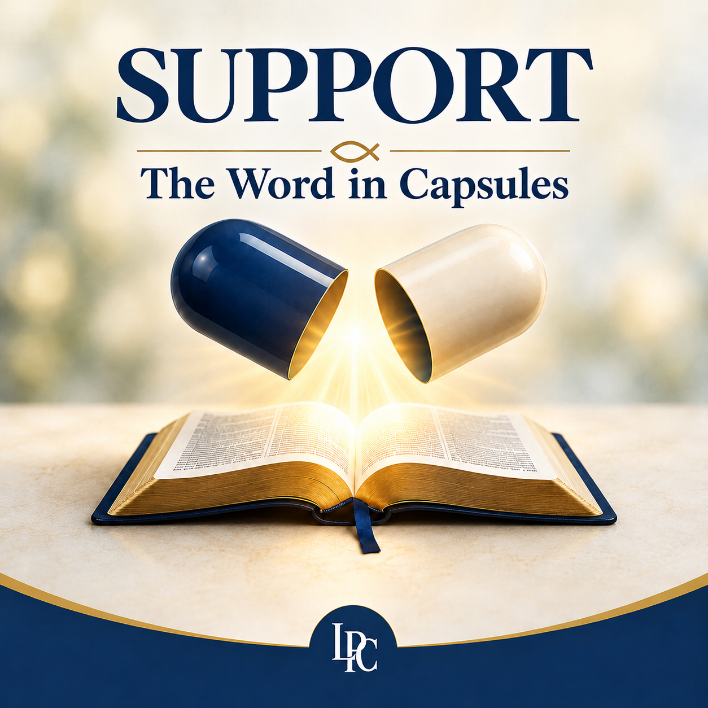

Cualquier aportación que hagas a LPC nos permite dedicar más tiempo a preparar contenido, para seguir ofreciendo material que contribuya positivamente a la forma de pensar, las convicciones y la fe de nuestros lectores.
Sí, quiero apoyar a LPC
← Volver al menú